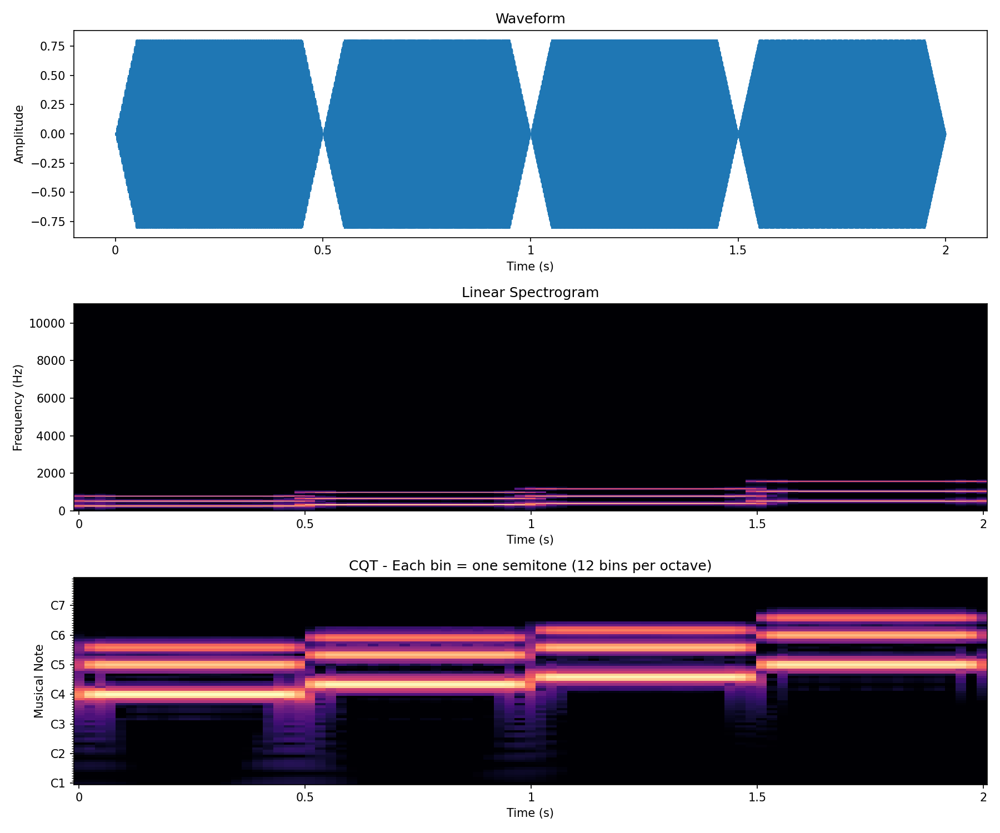

ByteCover3 学习指南
一步一步理解 ByteCover3：如何用十几秒的短音频片段，从海量歌曲中找到它的翻唱原曲。
学习路线
理解问题
翻唱识别是什么？为什么短视频场景很难？
音频如何变成图
波形、频谱图、CQT 时频表示
神经网络基础
CNN、ResNet、IBN 归一化
局部特征与 MaxMean
ByteCover3 的核心思想
Local Alignment Loss
模型是怎么学会识别翻唱的
两阶段检索
从海量歌曲里快速找到答案
Demo 工程化
动手写一个简化版 ByteCover3
真实案例与面试题
业务场景 + 高频面试 Q&A
第 1 章：理解问题
什么是翻唱识别？
想象你手机里有一首周杰伦的《晴天》。你的朋友在 KTV 唱了一首《晴天》，或者有人用吉他弹唱了《晴天》的副歌。
翻唱识别的任务就是：让电脑判断这两段音频是不是同一首歌。
难点在哪里？
- 换了歌手（男声变女声）
- 换了乐器（吉他版、钢琴版、摇滚版）
- 变了调（升调或降调）
- 变了速度（快一点或慢一点）
- 只唱了其中一段（比如只唱副歌）
传统方法 vs ByteCover3
传统方法
把整首歌变成一个"指纹"（一个数字向量），然后比较两个指纹像不像。
就像给一本书写一句话摘要，然后比较摘要。
问题：如果你只给我书里的一句话（短视频片段），我很难判断它属于哪本书。
ByteCover3
把一首歌切成很多小段，每段都有自己的"指纹"。
查询也是小段，就去目标歌曲里一段一段找最像的部分。
优势：只关心最匹配的局部片段，忽略不相关部分。
一句话总结：ByteCover3 解决的问题是——你只有一首歌的十几秒片段，它甚至可能是翻唱的，怎么从海量完整歌曲里找到它的原曲？
概念检查
- 翻唱识别：判断两段音频是不是同一首歌的不同版本
- 音频指纹：把音频变成一串数字，相似的音频数字也相似
- 全局特征：用一串数字代表整首歌
- 局部特征：用很多串数字代表歌的不同片段
第 2 章：音频如何变成图
2.1 声音的本质：波形
声音是一种波。你对着麦克风说话时，麦克风里的振膜会随声音振动，产生一个随时间变化的电压信号。
如果我们把这个电压画出来，就是一条波形：
- 振幅（上下高度）：表示声音的大小
- 频率（波浪的疏密）：表示音调的高低
直接看波形的问题
波形包含了所有信息，但对 AI 来说很难直接用：
- 信息太密：一秒钟的音频就有 22050 个采样点
- 看不出音高：波形是一团混合波，很难直接看出"这是 do、re、mi 中的哪个"
- 不同速度很乱：同一首歌快放和慢放，波形完全不同
2.2 频谱图：看每个时刻有哪些频率
想象钢琴键盘：低音在左边，高音在右边。
频谱图就是把音频在每一小段时间内，拆成不同频率的强度，然后画成一张图：
- 横轴：时间
- 纵轴：频率（音高）
- 颜色深浅：该频率在当前时刻有多强
这样一张图就像乐谱的可视化：亮的地方 = 那个时刻某个音很响。
2.3 CQT：论文用的特殊频谱图
论文用的是 CQT（Constant-Q Transform，常数 Q 变换）。
它和普通频谱图的区别在于：普通频谱图的频率轴是均匀分布的（每 10Hz 一格），而 CQT 的频率轴是对数分布的，低频分得很细，高频分得很粗。
为什么 CQT 更适合音乐？
因为人的听觉和音乐本身就是对数的：
- 100Hz 和 200Hz 差一个八度
- 1000Hz 和 2000Hz 也差一个八度
- 但普通频谱图会把 100-200Hz 和 1000-2000Hz 画得一样宽
CQT 让低音区的细节更丰富，每个 bin 对应一个半音，更适合音乐分析。
2.4 ByteCover3 里的具体设置
| 步骤 | 配置 |
|---|---|
| 采样率 | 22050 Hz |
| 分块 | 20 秒一段，相邻重叠 10 秒 |
| 时频表示 | CQT，每八度 12 bins，hop size 512，Hann 窗 |
| 时间下采样 | 沿时间轴 average pooling，降采样 100 倍 |
分块：20 秒一段，相邻重叠 10 秒
ByteCover3 把一首歌切成很多 20 秒的片段。但为什么不直接首尾相接，而是要让相邻片段重叠 10 秒呢？
为什么需要重叠？
重叠是为了不让音乐信息在 chunk 边界处被切断。
如果完全不重叠：
[0-20s] [20-40s] [40-60s]可能会出现这些问题：
- 某个和弦转换正好发生在 20 秒处
- 一段副歌旋律正好从 19 秒跨到 22 秒
- 这些内容会被切到两个 chunk 里，每个 chunk 都不完整
重叠 10 秒后：
[0-20s]
[10-30s]
[20-40s]任何发生在边界附近的内容，都至少会完整地出现在某一个 chunk 中。
为什么是重叠 10 秒？
10 秒 = 20 秒 chunk 的一半，也就是 50% 重叠。这是覆盖率和数据量的折中：
| 重叠方式 | 优点 | 缺点 |
|---|---|---|
| 不重叠 | 数据量最小 | 边界信息容易丢失 |
| 重叠 10 秒（50%） | 边界完整覆盖，数据量只增加一倍 | 数据量适中 |
| 重叠 15 秒（75%） | 覆盖更冗余 | 数据量更大，计算更慢 |
ByteCover3 选择 50% 重叠，是音频分块中很常见且实用的选择。
Hop size 512 是什么意思？
CQT 是逐帧计算的，但不是对每一个采样点都算一帧，而是每隔一段距离算一帧。
Hop size = 512 表示：每算完一帧，窗口就向前移动 512 个采样点，再算下一帧。
采样率 22050 Hz，hop size 512
每帧间隔 = 512 / 22050 ≈ 0.023 秒 ≈ 23 毫秒
1 秒钟 ≈ 43 帧Hop size 越小，时间分辨率越高，但计算量也越大；hop size 越大，数据量越小，但会丢失一些时间细节。512 是一个常用的折中选择。
Hann 窗是什么意思？
计算 CQT 时，我们要取一小段音频做变换。如果直接截断，两端会突然从"有声音"变成"没声音"，变换时会产生虚假的频率成分，这叫频谱泄漏。
一个具体例子：假设你吹了一口纯正 1000 Hz 的哨音（单一频率）。如果你截取的那一小段刚好在波形最高点被切断，FFT 会看到"这里好像突然从有信号变成没信号"，于是除了 1000 Hz 之外，还会多出一堆本来不存在的频率成分，比如 990 Hz、1010 Hz 附近的"假峰"。这些假峰会污染 CQT，让后续匹配变难。
Hann 窗就是给这一小段音频两端加一个"圆润的轮廓"，让开头慢慢变强、结尾慢慢变弱，从根本上消除这种"突然截断"：
这样变换时就不会看到"突变"，频谱图更干净、更准确。
重采样 22050 Hz 是什么意思？
原始音频的采样率可能各不相同：CD 是 44100 Hz，视频音轨可能是 48000 Hz。重采样就是把它们统一转换成同一个采样率。
- 22050 Hz 表示每秒有 22050 个采样点
- 根据奈奎斯特定理，采样率的一半就是能表示的最高频率，所以 22050 Hz 可以覆盖到 11025 Hz
- 对人声和大多数乐器来说，这个频率范围已经足够
- 数据量只有 44100 Hz 的一半，计算更快、存储更小
简单记：22050 Hz 是一个"够用且省资源"的选择。它覆盖了音乐中最重要的频率范围，同时不会让数据太大。
时间下采样 100 倍是什么意思？
CQT 是逐帧计算的。假设 hop size = 512，采样率 22050 Hz：
- 每帧间隔 ≈ 512 / 22050 ≈ 0.023 秒，约 23 毫秒
- 1 秒钟 ≈ 43 帧
- 一首 4 分钟的歌 ≈ 10000 多帧
时间下采样 100 倍，就是把连续的 100 帧合并成 1 帧，通常取平均值：
原来：[帧1][帧2][帧3]...[帧100][帧101]...[帧200]
合并：[平均1-100] [平均101-200]结果：数据量变成原来的 1/100，但主要的时频结构仍然保留。
为什么要下采样？
| 方面 | 不下采样 | 下采样 100 倍 |
|---|---|---|
| 数据量 | 一首歌 10000+ 帧 | 一首歌 100+ 帧 |
| 计算量 | 神经网络处理很慢 | 神经网络处理更快 |
| 保留信息 | 时间细节很丰富 | 保留主要时频结构，细节适度压缩 |
2.5 一个真实的 CQT 例子
下面是一个 2 秒钟的旋律 C4 → E4 → G4 → C5（do → mi → sol → 高音 do）的三种表示：

从图里能看到什么？
- 波形：4 个鼓包，每个对应一个音符
- 线性频谱图：每个音符有平行的亮线（基频 + 泛音），但都挤在底部
- CQT：4 个音符从左下到右上"爬楼梯"，每个音符对应清晰的音名位置
概念检查
- 声音可以画成波形，波的高低是响度，疏密是音调
- 频谱图横轴是时间，纵轴是频率，颜色表示强度
- CQT 是一种特别适合音乐的频谱图，低频分得更细，纵轴对应音符
- 分块重叠 10 秒是为了避免音乐信息在 chunk 边界处被切断
- 重采样 22050 Hz 是把音频统一成每秒 22050 个采样点，覆盖足够频率且节省计算
- Hop size 512 表示每帧之间移动 512 个采样点，约 23 毫秒
- Hann 窗让音频片段两端平滑过渡，减少频谱泄漏
- 时间下采样 100 倍是把连续 100 帧合并成 1 帧，减少数据量同时保留主要结构
第 3 章：神经网络基础
3.1 神经网络是什么？
神经网络可以理解为一个超级复杂的函数：
输入 → [很多层计算] → 输出比如输入一张猫的图片，输出"这是猫的概率 99%"。它里面有很多"神经元"，每个神经元做很简单的计算：把输入加权求和，再经过一个非线性变换。
训练的过程就是：给网络看成千上万张图，告诉它正确答案，让它不断调整内部参数，最后学会识别。
对 ByteCover3 来说：输入是 CQT 图，输出是这段音频的 embedding（特征向量）。
3.2 CNN：专门看图的神经网络
普通神经网络把图片拉平成一列数字，但这样会丢失空间关系。比如一个音符的亮斑是一片区域，不是单独一个点。
CNN（卷积神经网络）的想法是：用一个小窗口在图上滑动，局部地看图。
卷积是什么？
想象你有一个 3×3 的小滤镜（卷积核），你把它放在图片左上角，计算这 9 个格子的加权平均，得到一个数字。然后向右移一格，再算。一行算完，再往下移一格。
不同的滤镜可以检测不同的东西：竖直边缘、横线、特定纹理。
多层卷积
CNN 通常有很多层：
- 第 1 层：检测简单边缘、点
- 第 2 层：检测简单形状（横线、竖线、角）
- 第 3 层：检测更复杂的图案
- ...
- 第 N 层：检测高级概念（比如"这是 C 和弦"、"这是鼓点"）
为什么不同层能检测不同复杂度的特征？
核心是两个效应叠加：感受野越来越大，以及简单特征组合成复杂特征。
1. 感受野越来越大
感受野（Receptive Field）就是一个神经元能「看到」的输入区域大小，也就是它的「视野范围」。
- 第 1 层 3×3 卷积：每个神经元看原图 3×3 的区域
- 第 2 层 3×3 卷积：看第 1 层输出的 3×3，但第 1 层每个点已覆盖原图 3×3，所以实际看原图约 5×5
- 第 3 层 3×3 卷积：感受野继续扩大到约 7×7
就像戴望远镜：浅层是低倍数，只看细节；深层是高倍数，越看越大。
为什么第 1 层每个点能覆盖原图 3×3？
因为第 1 层本身就是用 3×3 卷积核在原图上滑出来的。第 1 层的一个输出值，等于原图某个 3×3 小区域的加权平均，而不是原图的一个点。
具体看下面这个例子：
原图（5×5）
A B C D E
F G H I J
K L M N O
P Q R S T
U V W X Y第 1 层输出（3×3）
P Q R
S T U
V W X- P 来自原图左上角 3×3：A,B,C,F,G,H,K,L,M
- R 来自原图右上角 3×3：C,D,E,H,I,J,M,N,O
- X 来自原图右下角 3×3：M,N,O,R,S,T,W,X,Y
所以第 2 层看第 1 层的 3×3（P,Q,R,S,T,U,V,W,X），其实就是把原图 9 个相邻的 3×3 区域拼起来，正好覆盖约 5×5 的原图。
第 1 层的每个神经元只看原图一个 3×3 的小格子，所以只能发现「这里有一条竖边」或者「这个频率 bin 突然变亮」。
第 2 层虽然也是 3×3 卷积，但它看的是第 1 层的输出；而第 1 层的每个点已经覆盖了原图的 3×3，所以第 2 层实际上能看到原图约 5×5 的区域。
层数越深，每个神经元能「看到」的原图范围就越大，自然就能发现更大的结构。
2. 特征层层组合
第 1 层学到的是「横线」「竖线」「亮点」这类最基础的特征。
第 2 层可以把第 1 层的输出组合起来：横线 + 竖线 →「角」；两条竖线 →「两条平行线」。
第 3 层再把「角」「平行线」组合成「三角形」「方块」等更复杂的图案。
到了深层，网络就能组合出「这是 C 和弦」「这是副歌开头」「这是一段鼓点」这种高级概念。
每一层学到什么是自己决定的，还是人规定的？
不是人指定的，是网络自己从数据里学出来的。但为什么它恰好学出「简单 → 复杂」这种层次？主要有三个原因：
1. 架构逼着它先学局部
第 1 层只能看 3×3 的小区域，它想学「整段副歌」也学不了，因为根本看不到那么大的范围。所以它只能先学最基础、最局部的模式：边缘、点、小纹理。
2. 复杂的东西本来就是简单东西拼起来的
一个旋律乐句可以拆成很多音符；一个和弦可以拆成几个同时响的音；一座房子可以拆成墙、窗、门。网络发现：与其每一层都从零开始学复杂图案，不如先学小零件，再组合。这样参数更少、效果更好。
3. 任务在引导它
ByteCover3 的任务是判断两段音频是不是同一首歌。训练时，如果网络学的特征对「识别同一首歌」没用，损失就会高，梯度下降会逼着它调整。久而久之，网络就学会了那些对「翻唱不变、歌曲可区分」有用的特征：旋律、和弦、节奏型，而不是音色、歌手嗓音。
一句话总结：不是「我们规定第 3 层必须学和弦」，而是「数据和任务让第 3 层发现：学和弦对完成翻唱识别任务最有帮助」。
对 ByteCover3 的 CQT 图来说，这种层次大致对应：
- 浅层：某个频率 bin 突然变强（单个音符）
- 中层：一小段旋律走向或简单和弦
- 深层：乐句、节奏型、歌曲段落
一句话总结：CNN 的浅层像显微镜看细节，深层像广角镜头看大局；而且深层会把浅层发现的小零件组装成复杂结构。
3.3 ResNet：让神经网络可以很深
直觉上，网络层数越多，能力越强。但实际情况是：当网络超过一定深度后，训练效果反而变差。信息在层层传递中容易"丢失"或"退化"。
ResNet 的解决办法：shortcut（ shortcut）。
普通网络： 输入 → [层1] → [层2] → [层3] → 输出
ResNet： 输入 ───────────────┐
↓ ↓
[层1] → [层2] → [层3] → 输出
↑_________________|
（跳过去）也就是：输出 = 层3(层2(层1(输入))) + 输入
这个"+ 输入"就是残差连接。如果某层学不到东西，它至少可以把输入原封不动传下去，不会变得更差。
ByteCover3 用的是 ResNet-50，就是有 50 层的 ResNet。
3.4 IBN：Instance-Batch Normalization
这是 ByteCover1 引入的，ByteCover3 沿用了。
先理解 Normalization（归一化）
神经网络训练时，数据分布会变化，导致训练困难。Normalization 就是把数据调整到合适的范围，让训练更稳定。
- Batch Normalization（BN）：对一个 batch 内的数据做标准化，保留内容信息
- Instance Normalization（IN）：对每个样本单独做归一化，能去掉"风格"信息
IBN 块
IBN 把 BN 和 IN 结合起来：一部分走 BN，一部分走 IN，然后合并。
为什么对翻唱识别有用？
翻唱版本之间差异很大：不同歌手、不同乐器、不同调、不同速度。IN 帮助网络忽略这些"风格"变化，BN 帮助网络保留"它是哪首歌"这个内容信息。
3.5 ByteCover3 的网络结构
高维特征图 Z ∈ R^(C×H×W)
经过 ResNet-IBN 后，原来的 CQT 图被转换成另一张"图"：
- C = 2048：通道数，每个通道是一种"高级特征检测器"
- H = 6：高度（压缩后的频率方向）
- W = T/s：宽度（压缩后的时间方向）
你可以把输出想象成 2048 张"小图"叠在一起，每张图代表一种高级特征。
GeM Pooling（广义均值池化）
ResNet-IBN 输出的是 C × H × W 的三维特征图，但我们需要一个固定长度的向量来表示这个 20 秒片段。所以要做一步池化（Pooling）：把 H×W 的空间信息压缩掉，只保留 C 个通道的数值。
最自然的想法有两种：
- 平均池化（Average Pooling）：把 H×W 所有位置求平均。好处是考虑全局，坏处是容易把重要的局部信息稀释掉。
- 最大池化（Max Pooling）：只取每个通道的最大值。好处是突出最显著的特征，坏处是完全忽略其他位置。
GeM Pooling 在两者之间取一个可学习的平衡：
- 当 p=1 时，GeM = Average Pooling
- 当 p→∞ 时，GeM = Max Pooling
- p 是一个可学习的参数，网络自己决定应该多像平均、多像最大
为什么 ByteCover3 要用 GeM？ 因为对翻唱识别来说，一段 20 秒音频里不是所有时刻都同样重要。比如某个特征性旋律出现的时刻、鼓点进入的瞬间，可能比静音或平淡伴奏更关键。GeM 让网络自动学会：哪些位置值得重点关注，哪些可以平滑带过，而不是人工决定用平均还是最大。
一句话总结：GeM Pooling 把三维特征图压缩成一维向量，同时让网络自己决定「应该多关注最显著的位置，还是应该兼顾全局」。
PCA-FC 降维
现在我们有 2048 维的向量，维度太高。PCA-FC 把它降到 512 维：
- 先用 PCA 计算一个投影矩阵
- 用这个矩阵初始化全连接层
- 然后在训练中继续微调
最终一首歌变成 N 个 512 维向量，每个向量代表 20 秒片段的特征。
概念检查
- CNN 是用小窗口扫描图片，学习从简单到复杂的特征
- ResNet 用 shortcut 让深层网络能训练
- IBN 结合 BN 和 IN，让模型对风格变化更鲁棒
- ByteCover3 用 ResNet-IBN 从 CQT 图里提取局部特征
第 4 章：局部特征与 MaxMean 相似度
4.1 为什么局部特征更好？
先回忆全局特征的做法：
整首歌 → 一个向量
短查询 → 一个向量
比较两个向量问题出在哪？
想象你有一本 300 页的小说，我只给你其中 3 页。要你判断这 3 页属于哪本书。
- 全局方法：把整本书总结成一句话摘要，再把这 3 页也总结成一句话，然后比较。这不合理，因为 3 页的内容很难代表整本书的主题，300 页书里大量内容会干扰匹配。
- 局部方法：把整本书拆成一页一页。给你 3 页，就去所有书里一页一页找最像的。
4.2 MaxMean 相似度
现在我们有：
- 查询音频：M 个局部特征
[q_1, q_2, ..., q_M] - 目标歌曲：N 个局部特征
[d_1, d_2, ..., d_N]
计算步骤
- 对每个查询 chunk，找最像的目标 chunk：
best_i = max(similarity(q_i, d_1), similarity(q_i, d_2), ..., similarity(q_i, d_N)) - 对所有查询 chunk 取平均：
MaxMean(查询, 目标) = (best_1 + best_2 + ... + best_M) / M
关键：只关心每个查询片段在目标里最匹配的那部分，目标里其他不相关的片段不会影响分数。
4.3 非对称性
MaxMean 是不对称的：总是以较短的那个作为基准。
为什么？因为场景就是短查询 vs 长完整歌曲。如果反过来以长歌曲为基准，会要求长歌曲的每个片段都能在短查询里找到匹配——这几乎不可能。
4.4 余弦相似度
ByteCover3 用余弦相似度比较两个 embedding。它计算两个向量方向的夹角：
- 夹角 0° → 方向完全相同 → 相似度 1
- 夹角 90° → 垂直 → 相似度 0
- 夹角 180° → 方向相反 → 相似度 -1
只看方向，不看长度。因为 embedding 的长度可能受音量、音频质量影响，方向更能反映"是什么内容"。
概念检查
- 局部特征为什么比全局特征更适合短查询？
- MaxMean 是怎么计算的？（先 max 再 mean）
- MaxMean 为什么是非对称的？
- 余弦相似度比较的是方向还是长度？
第 5 章：Local Alignment Loss（LAL）
先明确一个阶段问题：损失函数只在训练阶段使用。训练完成后，模型参数固定下来，建库和检索时只用它提取 embedding、算相似度，不再计算损失。
ByteCover3 的完整流程可以分成三个阶段：
- 训练阶段：用 LAL 训练特征提取模型，即 ResNet-IBN 50。输入音频片段的 CQT 图，输出 embedding；LAL 告诉模型「预测得对不对」，然后反向传播调整网络参数。
- 建库阶段：用训练好的 ResNet-IBN 把曲库歌曲切成 20 秒 chunks，提取局部 embedding 并存入索引。
- 检索阶段：用户上传查询音频，同样用 ResNet-IBN 提取 embedding，然后用 ANN + MaxMean 找最相似的歌曲。这一步只算相似度，不算损失。
简单记：LAL 训练的是「音频 → embedding」的 ResNet-IBN 模型；检索时的 ANN + MaxMean 只是搜索算法，不需要训练。
5.1 什么是损失函数？
损失函数是模型训练的"反馈信号"：
- 损失越大 → 模型越错 → 需要调整
- 损失越小 → 模型越对 → 保持
训练神经网络就是不断做：输入数据 → 模型预测 → 计算损失 → 调整参数让损失变小。
5.2 第一种损失：分类损失
分类问题就是：给定一段音频，判断它是哪首歌。
ByteCover3 的局部分类损失
ByteCover3 不是对一个全局 embedding 做分类，而是对局部特征序列做分类。
它引入了一个概念：类别代理特征（class proxy）。对每个类别 k（每首歌），模型学一个代理特征序列 W_k，作为这首歌的"标准模板"。
然后对一段查询音频的局部特征 X，计算：
logit_k = MaxMean(X, W_k)意思是：查询音频和每首歌的模板有多像？然后把这些分数输入 Softmax，计算分类损失。
5.3 第二种损失：Triplet Loss
Triplet = 三元组，包含三个样本：
- Anchor（锚点）：当前样本
- Positive（正样本）：和锚点是同一首歌的另一个版本
- Negative（负样本）：和锚点是不同歌的样本
- Anchor：《晴天》原版片段
- Positive：《晴天》吉他翻唱片段
- Negative：《七里香》原版片段
Triplet Loss 的目标
我们希望 Anchor-Positive 距离小，Anchor-Negative 距离大。ByteCover3 用 MaxMean 作为距离度量：
loss_triplet = max(0, MaxMean(anchor, negative) - MaxMean(anchor, positive) + margin)5.4 总损失：LAL
LAL = loss_cls + loss_triplet为什么要用两种损失？
两种损失像两个老师，分别从不同的角度教模型：
| 损失 | 教模型什么 | 比喻 |
|---|---|---|
| 局部分类损失 | 「这段音频属于哪首歌」 | 老师指着图片说「这是猫，那是狗」 |
| 局部 Triplet 损失 | 「同一首歌的不同版本要像，不同歌要不像」 | 老师让模型理解「这只猫和那只猫更像，而不是像狗」 |
只用分类损失的问题：模型可能只学会「区分歌曲」，但不关心同一首歌的两个版本是否像。比如它可能把《晴天》原版和翻唱版分得远远的，只要各自能正确分类就行。
只用 Triplet 损失的问题：模型可能学会相对远近，但对「具体是哪首歌」不够确定，检索时容易搞混相似的歌。
两者结合，模型既知道「这是哪首歌」，又知道「同一首歌的不同版本应该靠得近」。一个负责「认歌」，一个负责「量相似度」，互相补充。
为什么叫"Local Alignment"（局部对齐）？
- Local：基于局部特征，不是全局特征。每段 20 秒音频被切成更小的局部片段，损失是在这些局部片段上计算的。
- Alignment：训练模型学会把同一首歌的不同版本"对齐"到相近的局部特征空间里。原版、翻唱版、吉他版虽然听起来不同，但它们在特征空间里应该靠得很近。
一句话总结：LAL = 「局部分类损失让模型认歌」 + 「局部 Triplet 损失让模型把同歌的不同版本拉到一起」。两者共同训练出适合翻唱识别的局部特征。
5.5 训练数据构造
ByteCover3 的训练比较特别：
- 从训练曲库中随机切出 6–60 秒的短片段
- 和完整曲目按 1:1 混合
- 构造 triplet：anchor、positive、negative
这样模型在训练时就见过"短片段 vs 完整歌"的情况，上线时才能更好地处理短视频查询。
概念检查
- 损失函数是模型训练的"反馈信号"
- 分类损失让模型学会判断"这是哪首歌"
- Triplet 损失让模型学会"同歌拉近，异歌推远"
- ByteCover3 的 LAL 是"局部分类 + 局部 Triplet"
第 6 章：两阶段检索
6.1 为什么需要两阶段？
假设数据库里有 1000 万首歌，每首平均 4 分钟。ByteCover3 把每首歌切成 20 秒 chunks，每首大约有 20–30 个 chunks。
数据库里一共有：
1000 万首歌 × 25 个 chunks = 2.5 亿个局部特征向量如果逐一比较，计算量太大。所以需要：
- 第一阶段：快速筛掉大部分不可能的候选
- 第二阶段：对剩下的少数候选仔细计算 MaxMean
6.2 第一阶段：ANN 粗排
ANN = Approximate Nearest Neighbor，近似最近邻搜索。
精确搜索 vs 近似搜索
- 精确搜索：一个一个算距离，保证绝对最近。但 2.5 亿次对比太慢。
- 近似搜索：用特殊数据结构快速找出"很可能最近"的候选。速度极快，召回率很高。
HNSW 是什么？
HNSW = Hierarchical Navigable Small World，层次化可导航小世界图。它建一个多层图：
- 顶层：稀疏连接，长距离跳跃
- 中层：连接更密
- 底层：最密集，精确搜索
就像在城市里找一家店：先坐飞机到大城市，再坐火车到区，最后打车在街区里找。
ByteCover3 的粗排过程
用户查询：15 秒 → 3 个 chunks → q_1, q_2, q_3
对每个 q_i：
在 HNSW 索引里找 Top-50 最近邻
得到 50 个相似的 chunk
总共：3 × 50 = 150 个候选 chunks
来自 D 首不同的候选歌曲（D ≤ 150）6.3 第二阶段：MaxMean 精排
第一阶段筛出了 D 首候选歌曲。第二阶段对这 D 首候选歌曲，逐一计算：
score_k = MaxMean(查询, 第 k 首候选歌)然后按分数排序，返回 Top 结果。
6.4 复杂度对比
| 方法 | 计算量 |
|---|---|
| 暴力全比对 | 查询 chunks × 数据库所有 chunks（巨大） |
| 两阶段检索 | 查询 chunks × K（粗排）+ D × MaxMean（精排）（小很多） |
概念检查
- 为什么不能用暴力方法一首一首比对？
- ANN 是什么意思？和精确搜索的区别是什么？
- HNSW 的多层图比喻是什么？
- 第一阶段找的是 chunk 还是歌曲？
- 第二阶段做什么？
第 7 章：Demo 工程化
7.1 Demo 目标
我们做了一个最小可运行版本，流程如下：
7.2 简化点
| 论文 | Demo |
|---|---|
| ResNet-IBN | 简单 CNN（几层卷积） |
| LAL Loss 训练 | 简单 Triplet Loss |
| PCA-FC 降维 | 简单线性层或直接取特征 |
| HNSW 索引 | sklearn 近似搜索 |
| 512 维 embedding | 64 维 |
7.3 Demo 结果
我们生成了 4 首测试"歌"，每首由不同音符序列组成。然后用 3 秒查询片段做检索：
正确匹配 song1_do_mi_sol，相似度 0.9953
正确匹配 song3_mi_sol_si，相似度 0.9968
7.4 代码文件说明
bytecover3_demo/
├── audio_utils.py # CQT 提取、分块、下采样
├── model.py # 简化 CNN + embedding 提取
├── retrieval.py # MaxMean 相似度 + 两阶段检索
└── demo.py # 完整流程示例运行命令：
python3 bytecover3_demo/demo.py7.5 和论文的差距
这个 Demo 是理解原理和流程，不是复现论文精度。真实 ByteCover3 需要：
- 大规模真实歌曲数据集
- 预训练的 ResNet-IBN 权重
- LAL Loss 完整训练
- 工业级 HNSW 索引
- 更大维度和更复杂的后处理
第 8 章：真实案例与面试题
ByteCover3 不是只在论文里好看，它在很多真实业务场景里都能派上用场。这一章我们看几个典型场景，并准备一些面试高频题。
面试高频题
总结与延伸
ByteCover3 核心创新
1. 局部特征表示
把整首歌表示为多个短时局部 embedding 的序列，而不是一个全局向量。
2. MaxMean + LAL
让不同长度的局部特征序列能够鲁棒地比较，专门优化短查询匹配。
3. 两阶段检索
ANN 粗排 + MaxMean 精排，兼顾准确率和效率，适合工业级部署。
常见误区：ByteCover3 的网络结构里用了 GeM Pooling，但"池化"本身不是它的创新。全局平均池化是 CNN 里很常见的技术，会把整段输入压成一个全局向量；而 ByteCover3 的核心正是不用全局向量，改用局部特征序列。
ByteCover3 完整流程
把原始音频变成模型能处理的 CQT 图。
- 重采样到 22050 Hz，统一采样率
- CQT：把波形变成时频图，纵轴每 bin 对应一个半音
- Hann 窗 + hop size 512：减少频谱泄漏，控制时间分辨率
- 时间下采样 100 倍：减少计算量，保留主要时频结构
- 切 20 秒 chunks，重叠 10 秒：得到局部片段，避免边界丢失
把 CQT 图变成局部 embedding。
- ResNet-IBN 50：逐层提取从简单到复杂的特征
- IBN：去掉风格（歌手、乐器），保留内容（旋律、和弦）
- GeM Pooling：把 3D 特征图压缩成 2048 维向量
- PCA-FC：降到 512 维，得到最终局部 embedding
用 LAL 训练 ResNet-IBN，让它学会提取适合翻唱识别的特征。
- 局部分类损失：让模型学会判断"这是哪首歌"
- 局部 Triplet 损失：让同歌不同版本靠近，不同歌远离
- 混合训练数据：6–60 秒短片段 + 完整曲目 1:1，模拟真实查询
把训练好的模型应用到曲库。
- 把每首歌切成 20 秒 chunks，重叠 10 秒
- 用 ResNet-IBN 提取每个 chunk 的 512 维 embedding
- 把所有 embedding 存入向量索引（如 HNSW）
用户上传短音频，系统快速找到原曲。
- 第一阶段 ANN 粗排：快速找到少量候选 chunks
- 第二阶段 MaxMean 精排：对候选歌曲计算精确相似度并排序
- 返回 Top-K 结果：相似度最高的歌曲
一句话串起来：音频先变成 CQT 图，再被 ResNet-IBN 切成局部 embedding；训练时用 LAL 教会模型「同歌像、异歌不像」；上线时把曲库 embedding 存进索引，用户查询时先用 ANN 快速粗排，再用 MaxMean 精确精排。
适用场景
- 短视频平台音乐识别与版权管理
- 用户哼唱/弹唱识别
- 直播背景音乐监测
- 曲库扩充与版权结算
延伸学习路径
- 音频指纹：Shazam 等系统的经典做法，适合识别同一录音
- 音乐信息检索（MIR）：音乐分类、情感识别、推荐
- 深度学习音频：wav2vec、MusicBERT 等预训练模型
- 向量检索：HNSW、Faiss、Milvus 等工业级工具
ByteCover3 vs 相关技术
| 技术 | 类型 | 作用 | 和 ByteCover3 的关系 |
|---|---|---|---|
| ByteCover3 | 深度学习模型 | 把音频变成翻唱鲁棒的局部 embedding | 核心算法 |
| Milvus / Faiss | 向量数据库 / 检索库 | 存储高维向量并快速找最近邻 | 基础设施，可存 ByteCover3 的 embedding |
| Shazam landmark 指纹 | 传统音频指纹 | 从频谱峰值生成哈希，识别同一录音（原版） | 同类问题，但针对原版录音，不擅长翻唱 |
一句话关系：ByteCover3 负责「算出一个好向量」；Milvus / Faiss 负责「把这些向量存起来、快速找到近的」；Shazam 的 landmark 方法是在解决类似问题，但走的是另一条技术路线，更适合原版录音识别。
一句话总结
ByteCover3 就是教电脑"不要死记整首歌长什么样，而是学会一段一段地比对"，这样哪怕只听了一小段翻唱，也能在海量歌曲里找到原曲。